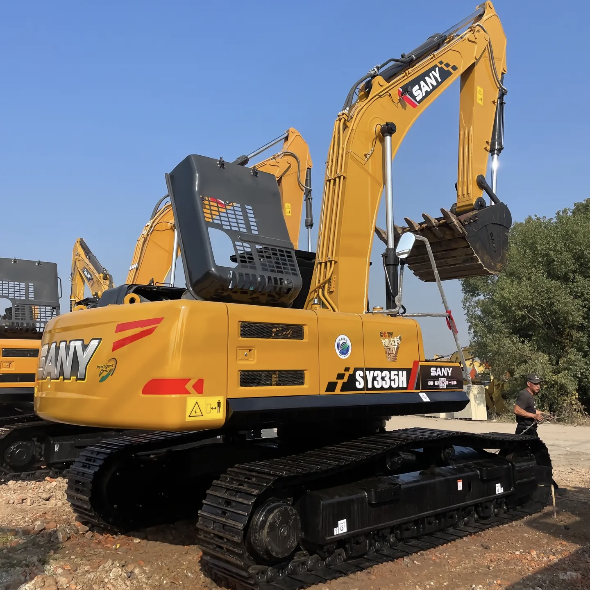

Refurbished SANY SY335 Excavator
The SANY SY335 Excavator is a high-performance machine designed for large-scale construction, mining, and earthmoving projects. Known for its powerful engine, exceptional hydraulic capabilities, and impressive lifting capacity, the SY335 is built to perform under the toughest working conditions. Whether you are digging, lifting heavy materials, or performing grading and demolition tasks, the SY335 delivers outstanding performance.
Honestly, it's almost impossible to buy a brand new excavator from China. They either don't exist or are made in China. If a Chinese seller tells you their Caterpillar/Komatsu/Volvo/Kobelco/Hitachi is brand new, they're lying. Therefore, a refurbished excavator is your best bet.

Here are the detailed specifications for a refurbished SANY SY335H excavator:
Operating Weight and Dimensions
- Operating Weight: ~33,500–34,500 kg
- Transport Length: ~11.0 meters
- Transport Width: ~3.19 meters
- Transport Height: ~3.65 meters
- Tail Swing Radius: ~3.6–3.8 meters
- Track Width: ~600–700 mm standard
- Undercarriage: Heavy-duty LC configuration with reinforced frame and triple chain guards
Engine and Powertrain
- Engine Model: Isuzu 6HK1X or SANY-customized Cummins QSL9
- Rated Power Output: ~212–235 kW (285–315 hp) @ 2,000 rpm
- Displacement: ~8.9 liters
- Fuel Tank Capacity: ~600 liters
- Travel Speed: ~5.0 km/h
- Swing Speed: ~9.0 rpm
- Gradeability: Up to 70%
- Emission Control: Tier 3 or Stage IIIA (refurbished units often pre-DEF)
Hydraulic System
- Main Pump Type: Electronically controlled axial piston pumps
- Pump Flow Rate: ~2 × 280–300 L/min
- System Pressure: Up to 34.3 MPa
- Hydraulic Oil Capacity: ~500 liters
- Efficiency Features:
- Load-sensing flow distribution
- Regeneration circuits
- Oversized valve cores for reduced pressure loss
- Energy-saving control valves
Performance Metrics
- Bucket Capacity:
- Standard: 1.6–1.9 m³
- Optional: 2.2 m³ heavy-duty bucket
- Max Digging Depth: ~7.2–7.5 meters
- Max Reach (Horizontal): ~11.5–12.0 meters
- Max Dump Height: ~7.2 meters
- Bucket Digging Force: ~220–235 kN
- Arm Digging Force: ~170–190 kN
Cab and Operator Features
- Cab Type: ROPS/FOPS-certified with reinforced structure
- Display: Intelligent LCD monitor with diagnostics and fuel tracking
- Controls: Pilot-operated joysticks with auxiliary hydraulic circuit
- Comfort: Air-suspension seat, HVAC, noise insulation
- Visibility: Wide glass area, LED work lights, optional 360° camera system
Attachments Compatibility
- Standard Bucket: 1.9 m³
- Optional Tools: Rock breaker, demolition shear, ripper, compactor
- Quick Coupler: Heavy-duty hydraulic coupler
- Bucket Series: Configurable for granite, gravel, and mining conditions
Refurbishment Scope
Refurbished SY335 units typically include:
- Engine Overhaul: Turbocharger, injectors, cooling system
- Hydraulic Restoration: Pump recalibration, valve block testing, hose replacement
- Electrical Diagnostics: Monitor, sensors, wiring harness
- Cab Reconditioning: Seat, joysticks, HVAC, repainting
- Structural Repairs: Boom/bucket welding, bushing replacement, undercarriage rebuild
Overview of the SANY SY335 Excavator
The SANY SY335 is a large hydraulic crawler excavator designed to tackle demanding tasks with ease. With a powerful engine, advanced hydraulic system, and a high lifting capacity, the SY335 is built to handle large-scale excavation, trenching, material handling, and demolition projects. Its robust construction ensures it performs reliably in even the most challenging environments.
A refurbished SANY SY335 has undergone an extensive inspection and reconditioning process, which includes replacing worn parts with original SANY components. This ensures that the refurbished machine offers the same level of performance, reliability, and durability as a brand-new unit, making it an excellent investment for businesses and contractors seeking cost-effective, high-performance equipment.
Key Specifications of the SANY SY335 Excavator
The SANY SY335 Excavator is designed for high efficiency and powerful performance, making it ideal for heavy-duty projects. Below are the key specifications that make the SY335 a reliable choice for large-scale operations:
-
Operating Weight: Approximately 33,500 kg (73,800 lbs)
-
Engine Power: 257 hp (192 kW)
-
Max Digging Depth: Up to 7.2 meters (23.6 feet)
-
Maximum Reach: 10.8 meters (35.4 feet)
-
Bucket Capacity: Typically 1.5 - 2.0 cubic meters (53 - 70.6 cubic feet)
-
Fuel Tank Capacity: Around 380 liters (100 gallons)
-
Travel Speed: Up to 5.5 km/h (3.4 mph)
These specifications enable the SY335 to perform a wide range of tasks efficiently, from digging and material handling to grading and lifting, all while maintaining high productivity.
Performance and Efficiency of the SY335
The SANY SY335 is engineered for outstanding performance, providing power and efficiency to handle heavy-duty tasks. Its powerful engine and advanced hydraulic system ensure smooth operation, quick cycle times, and high productivity in demanding work environments.
Performance Highlights:
-
Efficient Hydraulic System: The SY335 features an advanced hydraulic system designed for high efficiency. The hydraulic system delivers smooth and precise control, allowing for faster cycle times, better lifting capacity, and superior digging performance.
-
Fuel Efficiency: A key benefit of the SY335 is its fuel-efficient engine. It provides high power output while minimizing fuel consumption, making it an ideal choice for businesses looking to reduce operating costs and improve overall project profitability.
-
Impressive Lifting Capacity: With its powerful engine and hydraulic system, the SY335 excels in heavy lifting tasks. Whether you're moving large materials, lifting steel beams, or handling construction debris, the SY335 can handle the job with ease.
-
Precision Control: The SY335 offers precise control, allowing operators to work in confined spaces or perform delicate tasks with confidence. The responsive controls and smooth operation help improve accuracy and efficiency on the job site.
Durability and Longevity of the SY335
The SANY SY335 is built to last, designed with durable materials and high-quality components to withstand the demands of tough working environments. SANY is known for its rugged equipment, and the SY335 is no exception.
Durability Features:
-
Reinforced Undercarriage: The undercarriage of the SY335 is designed for long-lasting performance. The tracks, rollers, and sprockets are engineered to handle rough terrain and heavy loads, ensuring smooth operation even in challenging conditions.
-
Reliable Engine: The SY335 is powered by a high-performance engine that is designed for durability. With proper maintenance, the engine will continue to deliver reliable service for thousands of hours, minimizing downtime and ensuring long-term performance.
-
Heavy-Duty Hydraulic System: The hydraulic system of the SY335 is built to perform under high pressure and demanding workloads. Its durable components ensure the machine operates efficiently with minimal maintenance.
Comfort and Safety of the SY335
The SANY SY335 Excavator is designed with operator comfort and safety in mind. The spacious cabin, ergonomic controls, and advanced safety features ensure that operators can work efficiently and comfortably, even during long shifts in tough conditions.
Comfort and Safety Features:
-
Spacious and Ergonomic Cabin: The SY335 features an ergonomic cabin with an adjustable seat, easy-to-use controls, and excellent visibility. This ensures that operators can work comfortably and with minimal fatigue, improving overall productivity.
-
Noise and Vibration Reduction: The cabin is equipped with noise and vibration reduction technology to ensure a quieter and more comfortable working environment. This feature is especially beneficial during long hours of operation, helping operators maintain focus and efficiency.
-
Advanced Safety Features: The SY335 is equipped with Roll Over Protection (ROPS) and Falling Object Protection (FOPS) to ensure the operator's safety in hazardous work environments. Additionally, the machine’s stable and sturdy design provides excellent overall safety when operating on uneven ground.
Versatility and Attachments for the SY335
The SANY SY335 is a versatile machine capable of performing a wide range of tasks with the right attachments. Whether you need to dig trenches, move materials, or perform demolition, the SY335 can be equipped with various tools to meet your specific job requirements.
Common Attachments for the SY335:
-
Buckets: The SY335 can be fitted with a variety of bucket types, including general-purpose, heavy-duty, and grading buckets. These range from 1.5 to 2.0 cubic meters (53 - 70.6 cubic feet), allowing for efficient excavation and material handling.
-
Hydraulic Breakers: The SY335 can be equipped with a hydraulic breaker for demolition tasks. This attachment allows the excavator to break through concrete, rock, and other tough materials with ease.
-
Augers: Auger attachments are ideal for drilling precise holes for foundations, posts, or other applications requiring deep, narrow holes.
-
Grapples: Grapples can be used for lifting and moving materials such as logs, scrap metal, and debris, making the SY335 ideal for material handling tasks.
-
Quick Couplers: Quick couplers allow operators to quickly switch between attachments, minimizing downtime and improving productivity on the job site.
Benefits of Purchasing a Refurbished SANY SY335 Excavator
Choosing a refurbished SANY SY335 Excavator offers several advantages over buying a new machine, particularly for businesses that need reliable equipment at a lower cost.
Key Benefits:
-
Cost Savings: Refurbished SANY SY335 Excavators are much more affordable than new machines, offering the same high-quality performance at a fraction of the price.
-
Thorough Reconditioning: Refurbished units undergo an in-depth inspection and reconditioning process, with worn parts replaced by genuine SANY components. This ensures that the machine performs at its best, just like a new unit.
-
Warranty: Many refurbished SANY SY335 Excavators come with a warranty, providing peace of mind and protection against unforeseen mechanical issues.
-
Sustainability: Buying refurbished equipment is an environmentally friendly option. It helps reduce waste by extending the lifespan of existing machines, contributing to sustainability in the construction industry.
Maintenance Tips for the SANY SY335 Excavator
Regular maintenance is crucial for keeping the SANY SY335 Excavator running at optimal performance. Here are some essential maintenance tips to ensure its longevity and reliability:
Maintenance Recommendations:
-
Engine Maintenance: Regularly check the engine oil, replace air filters, and monitor coolant levels to prevent overheating and maintain peak engine performance.
-
Hydraulic System: Inspect hydraulic hoses for leaks and replace hydraulic filters as needed. Keeping the hydraulic system in good condition ensures efficient performance and reduces downtime.
-
Undercarriage: Regularly inspect the undercarriage, including tracks, sprockets, and rollers, for signs of wear. Replace damaged components to prevent further damage and ensure smooth operation.
-
Attachments: Inspect attachments such as buckets, grapples, and augers for wear and tear. Repair or replace damaged parts to maintain the efficiency of the attachments.
Conclusion
The SANY SY335 Excavator is a powerful, reliable, and versatile machine designed for heavy-duty applications in construction, mining, and earthmoving. Its robust performance, fuel efficiency, and operator comfort make it an excellent choice for large-scale projects. Purchasing a refurbished SY335 offers significant cost savings while maintaining high performance and reliability. With proper maintenance, the SY335 can continue to deliver top-tier performance for years, providing great value and productivity for your business.
Our Commitment
- 2 years / 4000 hours warranty.
- EPA certified.
- No sweatshop labor.
Contacts

- [email protected]
- Youtube Instagram Facebook
- Navigation: G206 (Sishu Bridge) in Changfeng County, Hefei City, Anhui Province, 200 meters north to the east